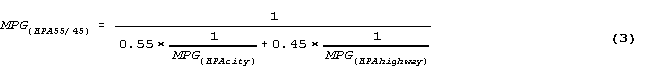
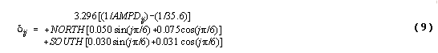
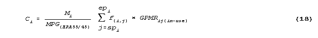
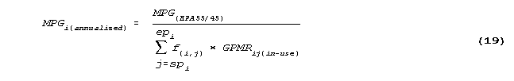

EIA Home > Transportation Home Page > Appendix B Estimation MethodologiesIntroduction
Appendix B Estimation Methodologies Introduction Statistics concerning vehicle miles traveled (VMT), vehicle fuel efficiency (given in terms of miles per gallon (MPG)), vehicle fuel consumption, and vehicle fuel expenditures are presented in this report. The methodology used to estimate these statistics relied on data from the 1993 Residential Energy Consumption Survey (RECS), the 1994 Residential Transportation Energy Consumption Survey (RTECS), the U.S. Environmental Protection Agency (EPA) fuel efficiency test results, the U.S. Bureau of Labor Statistics (BLS) retail pump price series, and the Lundberg Survey, Inc., price series for 1994. The estimation of these four statistics (VMT, vehicle fuel efficiency, vehicle fuel consumption, and vehicle fuel expenditures) occurred in several steps (Figure B1). First, for each RTECS vehicle, the VMT were determined from two actual odometer readings or imputed using data from the 1993 RECS. Second, the annual on-road fuel efficiency, given in terms of MPG, was estimated using the questionnaire responses, decoded Vehicle Identification Number (VIN) data, EPA fuel efficiency test results, and the months that the vehicle was in use. The MPG were adjusted to account for the difference between EPA test values and on-road values. Third, estimated vehicle fuel consumption was derived by dividing the VMT by the estimated MPG. Finally, the estimated vehicle fuel expenditures were derived by multiplying the vehicle fuel consumption by the fuel price. The 1994 RTECS, like the 1988 RTECS, did not collect vehicle fuel prices via fuel purchase diaries. Instead each RTECS vehicle was assigned a price based on reported fuel type used in each vehicle. Gasoline prices were obtained from the BLS 1994 Retail Gasoline Pump Price Series. Diesel fuel prices were obtained from the Lundberg Survey, Inc. (See "Other Fuel Types" in this appendix for a discussion of the gasohol and propane prices.) The following sections of this appendix describe the estimation procedures used for calculating the VMT, the MPG, the vehicle fuel consumption, the vehicle fuel prices, and the vehicle fuel expenditures. Also described in this appendix are the sources of data that were used in the estimation procedures. The following terms are used throughout this appendix:
Vehicle Miles Traveled When possible, VMT were determined for a sample vehicle by taking the difference between two odometer readings, which spanned a period of time. This method was used to determine VMT for 2,648 (48 percent) of the 5,553 RTECS sample vehicles. Attempts were made to obtain odometer readings during the RECS interviews, the End-of-Year (E-O-Y) RTECS interview and any time a vehicle was acquired or disposed. A "span" of odometer readings was the difference between two odometer readings. In most cases, this span was a B-O-Y to E-O-Y span, although due to an occasional nonresponse, only shorter spans were obtained, such as RECS to B-O-Y. Odometer spans of less than a full year were also obtained for vehicles that were either acquired or disposed of during the survey year. The VMT that were assigned to each RTECS vehicle corresponded to the period of time that the vehicle was in possession by the sample household. In most cases, however, this period of possession did not correspond exactly with the beginning and ending dates for the odometer span. This was true even for vehicles with a complete B-O-Y to E-O-Y odometer span; because odometer cards were mailed to respondents in several distinct waves at the beginning and end of the RTECS survey; and because the exact dates of odometer readings were often left to the convenience of the respondents. Therefore, all VMT obtained from odometer spans were adjusted to correspond to the period of time that the vehicle was in possession by the sample household. A 2-step adjustment procedure was used. STEP 1 adjusted the odometer-span VMT to a standard annualized mileage covering 365 days, and STEP 2 readjusted the annualized VMT to correspond to the exact period of time that the vehicle was in possession by the household. These adjustments took into account a typical distribution of VMT fractions among the different months of the year. Step 2 was performed only for vehicles that were not in the possession of the household for the entire calendar year 1994. STEP 1: This step adjusted the odometer-span VMT to a standard annualized VMT covering a full year, regardless of whether the span of odometer readings covered approximately 1 year or only a short span of time. Annualized VMT for vehicle i were computed as: Where:
Table B1.Distribution of Average Monthly Vehicle Miles Traveled Fractions
Source: 1984 Petroleum Marketing Index (PMI) Survey, NPD Research Inc. The survey is a demographically and geographically balanced-quota sample of 4,100 households. Respondents maintained fuel purchase diaries for an average of 10 months. As part of the survey, information was collected on the characteristics of trips taken in vehicles during a designated day. Trip lengths were recorded as respondent perception rather than from odometer readings. The distribution of monthly mileage fractions has been obtained from this survey. STEP 2: Once an annualized VMT was obtained from STEP 1 as described earlier, it was adjusted to correspond to the time period that vehicle i was in possession by the sample household as: Where: Fj = Monthly VMT fractions from the standard distribution in Table B1 spi = Month starting possession of vehicle i by the household, or January 1994, whichever is later epi = Month ending possession of vehicle i by the household, or December 1994, whichever is earlier. If vehicle i was in the household for the entire year then spi = JAN and epi = DEC. If a vehicle was acquired or disposed of during the survey, the starting or ending Fj was prorated according to the appropriate day of the month. To ensure that the distribution of average monthly vehicle miles traveled fractions given in Table B1 reflected 1994 driving patterns, a study of Federal Highway Administration (FHWA) Traffic Volume data for 1994 was conducted. This study resulted in FHWA VMT fractions being constructed for 1984 and 1993. FHWA 1993 data were used since the 1994 data for the entire year was unavailable. Annual VMT calculations were completed using both the NPD and FHWA fractions. The differences in average annual VMT per vehicle between using the NPD and FHWA VMT fractions ranged between 1 and 18 miles and were less than the standard errors of the average annual VMT. Therefore, in 1994 the NPD VMT fractions given in Table B1 will be used to compute annualized VMT since the differences in annual VMT between using the NPD and FHWA fractions were minor (RTECS Technote 5[3]). Incomplete Odometer or VMT Data For 1,927 sample vehicles (35 percent), no odometer span was available, although an estimate of annual VMT had been obtained from the respondent during the RECS interview. VMT for these vehicles were imputed from a regression on the estimated VMT obtained from the RECS. For another 978 sample vehicles (17 percent), no odometer span was available and a VMT estimate was not obtained during the RECS interview. VMT for these vehicles were imputed using a multiple linear regression model, where the independent variables were number of drivers, household income, age of household head, type of vehicle, and use of vehicle on the job. This regression was also used for imputing VMT for vehicles that were imputed as being acquired or disposed. Both of the regression models described above yielded estimates of annualized VMT. The STEP 2 adjustment described previously was then used to adjust this VMT to correspond with the time the vehicle was in the possession of the household. Vehicle Fuel Efficiency Fuel efficiency (MPG) must be estimated for each RTECS sample vehicle in order to estimate each vehicle's fuel consumption for the survey year. (Fuel consumption is estimated by dividing the VMT for time of possession, by the MPG.) Prior to 1988, the RTECS obtained actual fuel consumption data and on-road MPG from fuel purchase diaries maintained by the respondents. However, no fuel purchase diaries were used in the 1988 thru 1994 RTECS. Instead, the 1994 MPG were estimated using EPA laboratory test MPG that were adjusted to account for differences between actual on-road MPG and the EPA test MPG. This difference is known as MPG "shortfall." The feasibility of using shortfall-adjusted MPG in an RTECS survey was investigated by Lax, 1987[6]. That study verified that the method yielded unbiased MPG, when using a data base from a 1984 fuel purchase diary study performed by NPD Research, Inc. The adequacy of current shortfall adjustment methods is sufficient for late 1980 through early 1993's motor vehicle model years also (RTECS Technote 5[3]). The RTECS sample vehicles were assigned EPA test MPG from the EPA Emissions Certification Files. Each record of the Certification Files contained EPA test MPG for each unique combination of vehicle attributes within a given make, model, and year. These attributes were (1) number of cylinders, (2) cubic inches of engine displacement (CID), (3) type of transmission (manual or automatic), (4) gasoline or diesel fuel, and (5) whether the vehicle's emissions control package met Federal or California standards. Each record of the Certification Files also contained the number of vehicles sold for each unique combination of attributes. The vehicle attributes needed to assign a test MPG for sample vehicles were obtained from the Vehicle Identification Number (VIN), and/or from the RTECS questionnaire responses when the VIN was unavailable. The VIN was decoded to yield the vehicle attributes, by use of the Highway Loss Data Institute's "Vindicator" software. In addition to assigning test MPG, the EPA Certification Files were used to impute for missing vehicle attributes. Based on the nonmissing vehicle attributes obtained from the questionnaire and VIN, several records from the EPA Certification Files were usually found as potential "matches" to a given sample vehicle. A matching record was chosen from among the several applicable ones, with probability proportional to sales, using the sales figures on the EPA Certification Files. Once chosen, a record provided EPA test MPG (city and highway), as well as any vehicle attributes that were missing. The 1994 RTECS used a sequential adjustment procedure where the EPA Composite MPG was adjusted first to an on-road MPG, and then to an in-use MPG. The EPA Composite MPG Beginning in the early 1970's, EPA measured fuel efficiency from tests that were conducted on a dynamometer to simulate actual driving conditions. By 1975, EPA had incorporated separate "city" and "highway" driving cycles into the test. The city and highway MPG were combined to form a "composite" MPG, that was then weighted according to sales of the production vehicles in order to assess compliance with Corporate Average Fuel Economy (CAFE) standards. The EPA Composite MPG is based on the assumption of a "typical" vehicle-use pattern of 55 percent city driving and 45 percent highway driving, and has become a convenient single fuel efficiency measure for analytical and regulatory purposes. The EPA Composite MPG is defined as:  where: MPG(EPA 55/45) = the composite MPG MPG(EPA city) = the fuel efficiency when vehicle use pattern is city driving only MPG(EPA highway) = the fuel efficiency when vehicle use pattern is highway driving only. Fuel Efficiency Shortfall Fuel efficiency shortfall occurs when the fuel efficiency that is actually obtained while using the vehicle is lower than the EPA test results. Reasons for this shortfall are (1) a result of the differences between EPA test vehicles and the vehicles actually in use and (2) the differences between EPA procedures for simulated driving conditions and actual driving conditions. For example, EPA test vehicles are prototypes that do not contain the wide variety of power-consuming accessories often found on vehicles sold to consumers. The test procedures also do not simulate the actual driving conditions that affect fuel efficiency such as speed and acceleration of individual drivers, road conditions, weather, and traffic. In the 1994 RTECS, adjustments for this fuel efficiency shortfall were made to the composite MPG (MPG(EPA 55/45)) that were assigned to the sample vehicles. Fuel efficiency shortfall was expressed in terms of the "Gallons per Mile Ratio" or GPMR: Where: GPMRi = Gallons per Mile Ratio for vehicle i MPGi = On-road MPG or in-use MPG for vehicle i, depending on the analysis MPG(EPA 55/45) = EPA Composite MPG applicable to vehicle i. If GPMRi = 1 then there is no shortfall. If GPMRi > 1 then there is a shortfall for vehicle i (That is, the on-road or in-use fuel efficiency is less than the fuel efficiency indicated by the EPA Composite MPG.) Note that GPMRi can represent shortfall with respect to either the on-road or in-use MPGi, depending on the analysis being performed. GPMRi is commonly chosen as a measure of shortfall as opposed to MPGi for the following reasons: A shortfall adjustment is most often thought of as a correction factor, or multiplicative constant, rather than as an additive correction. GPMRi satisfies this convention. Shortfall is usually dependent on a vehicle's fuel efficiency level. That is, shortfall is usually higher at high levels of MPG(EPA 55/45) than at low levels of MPG(EPA 55/45). Therefore, it is more informative to express the amount of shortfall relative to MPG(EPA 55/45) rather than as an absolute quantity. GPMRi is a linear function of MPG(EPA 55/45) and can be modeled using ordinary least squares linear regression. GPMRi is a transformation that stabilizes error variances for the purposes of least squares linear regression. The On-Road MPG On-road MPG is a composite MPG that was adjusted to account for the shortfall between the EPA fuel efficiency and the actual fuel efficiency obtained on the road. The EPA developed two general procedures for adjusting MPG(EPA 55/45) to an on-road value. One procedure bases the size of the adjustment on specific technology features of the vehicle. The other procedure uses just two MPG discount factors, one to adjust the EPA highway estimate, the other to adjust the city estimate. These two factors are used for all vehicles, regardless of technology class. Either of these procedures could be used to adjust MPG(EPA 55/45) to an on-road MPG value for use in the 1994 RTECS. Since both procedures were unbiased for trucks, the choice as to which to employ in the 1994 RTECS should be based on their performance with cars. The adjustment based on discount factors seemed to be less biased than the Technology-Specific Adjustment. The discount factors are also less expensive since they do not require collection or imputation of information on fuel delivery system and drive-train. Because of these reasons the Discount Factors Adjustment Method was selected. Shortfall Adjustment Based on Discount Factors EPA's discount factors have widespread appeal because of their simplicity (Hellman and Murrell, 1985[4]; Hellman and Murrell, 1984[5]). The factors are .10 percent for city MPG and .22 percent for highway MPG. That is, for any vehicle i, These discount factors are the ones used to produce the "sticker" MPG figures seen on vehicles on dealer lots, and are used to produce the DOE/EPA Gas Mileage Guide. The analysis behind the development of these factors was performed on a conglomerate data base with data from Ford Motor Company, General Motors, Chrysler Corporation, DOE, and EPA. The data base contained approximately 38,000 vehicle records with model years from 1979 through 1981 with some 1982 models included. The data base contained predominately American-made vehicles, but also included foreign vehicles as well. The technology mix was dominated by rear-wheel drive and carbureted vehicles, but contained some vehicles with front-wheel drive or fuel injection. Vehicle records contained make, model, year, vehicle characteristics, the MPG as measured on the road, MPG(EPA city), and MPG(EPA highway). The data base also included the driver's perceptions of the proportion of their travel that was mostly urban (so called "city fraction"), and their average miles driven per day (AMPD). Fuel economy shortfall is affected by the vehicle use pattern: city-driving pattern is characterized by frequent starts and short trip lengths, while highway-driving pattern is characterized by infrequent starts and long trips. AMPD is a good surrogate variable for representing these different driving patterns. The city-driving pattern was characterized by AMPD from 5 to 22 miles per day, while the highway-driving pattern was characterized by AMPD's from 15 to 105 miles per day (Hellman and Murrell, 1984). City fraction and AMPD were used to split the data into two sets, one for development of the city discount factor, the other for development of the highway factor. The "city" and "highway" data sets were each stratified by vehicle technology classes. Linear regression was performed within each stratum. GPMR was regressed on city fraction, AMPD, MPG(EPA 55/45), odometer reading, and average temperature. The fitted models were then weighted and combined across vehicle technology strata, to produce a single "city" shortfall model and a single "highway" shortfall model. The weights were used to increase the influence of those models that represented technology mixes expected to become more prominent in the future (e.g., front-wheel drive and fuel-injected vehicles). The discount factors were derived from the two weighted models set at average or typical values of the independent variables.
For each RTECS vehicle, discounted city and highway on-road MPG were computed and then combined to form an on-road 55/45 composite as follows:
A shortfall ratio based on EPA discount factors was computed for each RTECS vehicle as follows: The In-Use MPG In-use MPG are MPG that are adjusted for individual driving circumstances. The on-road adjustments to MPG(EPA 55/45) discussed in the previous sections were "general" in that they did not take into account any effects on fuel economy that are due to the driver's individual circumstances. They, instead, utilized general attributes such as the technology features of the vehicle and average driving conditions. Fuel economy shortfall estimates can be refined for an individual vehicle by taking into account the following "in-use" effects. Urban versus rural driving pattern. That is, frequent starts and short trips as opposed to infrequent starts and longer trips. As mentioned in the previous section, a useful single variable for representing this effect is AMPD. High AMPD's usually represent mileage accumulated on the highway. Traffic congestion, which increases with population density. Seasonal temperature variations, especially for gasoline-carbureted vehicles. Humidity, which together with temperature, affects air-conditioner use. Differences among geographic areas of the country. Altitude. Wind. Road gradient and road surface conditions. In general, the first four items are considered the most significant in-use influences (Crawford, 1983[1]). In the cited study, shortfall variations as high as 25 percent or more occurred over the range of typical AMPD. Shortfall was 16 percent higher in urban areas than in completely uncongested areas, and was 12 percent higher in suburban areas. Shortfall varied seasonally (i.e., monthly) by 7 percent in the South and by 13 percent in the North. Regression models were developed (Crawford, 1983) for use in adjusting GPMRi(on-road) to an in-use shortfall employing measurements of several in-use effects as the independent variables. The regressions yielded a shortfall adjustment that was an additive one, as follows: where: GPMRij(in-use)= the in-use shortfall ratio estimated for vehicle i and month j (j = 1...12), GPMRi(on-road) = the on-road shortfall ratio estimated for vehicle i, from the above equations, and ij = an adjustment calculated for vehicle i and month j, from a regression model.
One regression model from the Crawford reference which is appropriate for use in RTECS is as follows:  Where: AMPDij = Average Miles per Day for vehicle i and month j, typically 35.6 (i.e., 13,000 miles per year). NORTH = 1 if the household is in the North. 0 if the household is not in the North. SOUTH = 1 if the household is in the South. 0 if the household is not in the South. This regression model was chosen because the independent variables that are important in explaining shortfall were readily available from the 1994 RTECS data. The model had two components. One component involved AMPDij and represented the influence of individual driving patterns for a given vehicle and month. The other component represented the change in shortfall that occurred throughout the seasons, due to the annual temperature cycle. The original regression equation also contained a minor term which accounted for the influence of air-conditioner use during hot, humid weather. This term was dropped in the 1994 RTECS estimations because it involved the rather complex computation of "Discomfort Index" from NOAA weather records, and the slight additional precision was judged insufficient to warrant the additional processing expense. Additional terms representing geographic regional effects, and the natural logarithm of population density (people per square mile, to represent the influence of traffic congestion) were not considered because of the computational cost. Once a GPMRij(in-use) was estimated it was used to estimate the final in-use fuel economy for vehicle i and month j as follows: The regression equation had separate seasonal components for the "North" and "South," because the difference between the winter shortfall and the summer shortfall was greater in the North than in the South. This difference can be seen in the model parameters. To define the North and South geographic areas the continental United States were divided into 97 two-digit ZIP Code regions. These regions were grouped to form two aggregate regions ("North" and "South") according to average winter and summer temperatures, and seasonal shortfall trends. Annual Vehicle Fuel Consumption In the 1994 RTECS, annual consumption was calculated by dividing the annual VMT by the annual MPG. The following is a derivation of the annual VMT and annual MPG. The MPGij(in-use) shown in the above section about fuel efficiency estimation procedures were final estimates of monthly in-use fuel economies for vehicle i, and could have been used for estimating monthly fuel consumptions and expenditures if monthly VMT were known. However, RTECS collected only annual VMT, as calculated from the B-O-Y and E-O-Y odometer readings. Nevertheless, the 1994 RTECS still made use of the MPGij(in-use) by disaggregating the annual VMT of sample vehicles into monthly VMT. The annual consumption for vehicle i can be thought of as the sum of the individual monthly consumptions: Where: Ci = Annual consumption of vehicle fuel for vehicle i, in gallons spi = Month starting possession of vehicle i by the household, or January 1994, whichever is later epi = Month ending possession of vehicle i by the household, or December 1994, whichever is earlier
cij = Consumption of vehicle fuel for vehicle i, during month j. Consumption is calculated over only those months that vehicle i was reported to be owned or used by the household. In this sense, "annual" does not necessarily mean a full 12 months. This is an important point since fuel economy varies seasonally. If vehicle i was in the household for the entire year, then spi = JAN and epi = DEC. Consumption for each month can be expressed in terms of monthly VMT and monthly fuel economy:
Where: mij = VMT for vehicle i, month j mpgij = Fuel economy in miles per gallon for vehicle i, month j so that: In the 1994 RTECS Ci was estimated by substituting the estimated MPGij(in-use) for mpgij. The mij was estimated in RTECS by disaggregating the annual VMT from odometer readings into monthly VMT. The disaggregation was performed as follows: Where: Mi = Annual VMT for vehicle i, calculated using odometer readings and the two-step adjustment procedure discussed in the section titled "Vehicle Miles Traveled" f(i,j) = Average fraction of "annual" VMT that was driven during month j, estimated for vehicle i There is no single distribution of average monthly VMT fractions f(ij). Rather, there was a family of distributions, the members of which were determined by the particular months a vehicle was owned or used by a household. According to this definition of monthly VMT fractions, no matter which months vehicle i was in a household, it was always true that: The f(i,j) were derived from the Fj in Table B1 as follows:
Otherwise Substituting mpgij = MPGij(in-use) and mij = Mi x f(i,j) into Equation 13. yields the following estimate of annual consumption for vehicle i: The estimator of annual consumption in the above equation was constructed with 1994 RTECS data. For vehicles that were acquired or disposed of during 1994, the estimator took into account seasonal differences in the overall fuel economy and the effects of these differences on the overall fuel consumption. Substituting MPG(EPA 55/45) in the above equation, and slightly rearranging the terms, the estimator of consumption is:  A single "annualized" fuel economy that is analogous to the "annualized" MPGi from previous RTECS, was estimated as:  Thus
Annual Vehicle-Fuel Expenditures and Price Vehicle Fuel Expenditures In the 1994 RTECS, fuel expenditures were calculated by multiplying the vehicle-fuel consumption by the price of the vehicle fuel. The 1994 RTECS, like the 1988 and 1991 RTECS, did not collect vehicle fuel prices via fuel purchase diaries. Instead, each RTECS vehicle was assigned a price based on reported fuel type used in the vehicle. Gasoline prices were obtained from the BLS 1994 Retail Gasoline Pump Price Series. Diesel fuel prices were obtained from the Lundberg Survey, Inc. (See "Other Fuel Types" in this appendix for a discussion of the gasohol and propane prices.) Respondents were asked if they purchased leaded or unleaded gasoline, and if unleaded, they were asked the grade. (See Appendix D, "Survey Forms.") The BLS prices are published by month, by Census region, and by type and grade of fuel. In 1988, the BLS monthly prices (for the Census region in which the household lived) were averaged across the months that the vehicle was in the possession of the household. This yielded for each RTECS vehicle a single fuel price, Pi, dependent on the Census region, type and grade of gasoline, and the months that the vehicle was in the possession of the household. In 1988, the annual fuel expenditures in dollars for each sample vehicle, Ei, was estimated by multiplying its assigned average fuel price, Pi, by its total consumption in gallons, Ci, as estimated in the previous section. However, in 1994, annual fuel expenditures, Ei, was estimated by multiplying monthly gasoline prices by monthly consumption to produce monthly expenditures and summing the monthly expenditures to produce annual expenditures. Type of Fuel Used Table B2 provides the percentage distribution of RTECS vehicles by fuel type categories. In 1994, 97.9 percent of the 156.8 million RTECS vehicles used unleaded gasoline. The remaining 6.3 percent of vehicles used leaded gasoline, diesel fuel or other fuel types. Table B2. Distribution of Residential Transportation nergy Consumption Survey Vehicles by Type of Fuel Used, 1994
Notes: Because of rounding, data may not sum to totals. For a discussion of underreporting of gasohol see Appendix C, "Quality of the Data." Q = Data withheld either because the Relative Standard Error (RSE) was greater than 50 percent or fewer than 10 households were sampled. Source: Energy Information Administration, Office of Energy Markets and End Use, 1994 Residential Transportation Energy Consumption Survey. Gasoline Prices Prices published by the BLS survey are retail prices for leaded regular, unleaded regular, and unleaded premium gasoline. These prices are published monthly by Census region. The BLS Pump Price Survey is conducted as input to the Consumer Price Index (CPI). Prices are collected in 85 urban areas. The population covered excludes the institutional population and households located on military bases. The covered population includes approximately 85 percent of all U.S. households. The BLS uses a rotating sample of approximately 1,100 service stations. Each vehicle in the 1994 RTECS, that used gasoline was assigned a monthly BLS fuel price. The BLS "unleaded regular" price was assigned to all vehicles that reported using leaded gasoline.. Diesel Fuel Prices Diesel fuel prices were obtained from the "Lundberg Letter-PS" published by Lundberg Survey, Inc. The Lundberg Survey, Inc. collects pump prices at retail service stations in approximately 80 major metropolitan markets. The survey includes about 15,000 service stations divided into 2 bimonthly panels. At least one city from every State is included. Service stations on military bases and in rural areas are excluded. Sales-weighted price data for both full-and self-service stations are published bimonthly. Regional prices are not published. All RTECS vehicles that used diesel fuel were assigned the same diesel fuel prices regardless of Census region. For the RTECS, the following two steps were used to create diesel prices. (1) Bimonthly diesel fuel full-service and self-service prices, obtained from the Lundberg Letter-PS, were averaged to create prices for each grade in the intermediate months. (2) The monthly full- and self-service prices were then weighted and averaged to obtain overall diesel fuel prices. The weights used to create an average diesel fuel price from the full- and self-service prices were based on RTECS data on "type of service" (full-service or self-/mini-service) used when purchasing diesel fuel. For each vehicle monthly prices were multiplied by monthly consumption to yield monthly expenditures. The monthly expenditures were summed to produce annual expenditures. Other Fuel Type Prices Approximately 1.4 million 1994 RTECS vehicles were reported using gasohol. In the absence of applicable national estimates of the average price paid for gasohol, the RTECS vehicles using gasohol were assigned fuel prices using the same methodology as the most common group of vehicles in the survey--vehicles using regular unleaded gasoline. (See above for methodology assigning unleaded regular gasoline prices and Appendix C, "Quality of the Data" for a discussion of RTECS underestimation of other fuels.) References 1. Crawford, R. 1983. "Seasonal and Regional MPG as Influenced by Environmental Conditions and Travel Patterns." Research performed under contract for DOE. Energy and Environmental Analysis, Inc., Arlington, VA. 2. Harrison, I.M. "Retail Fuel Pump-Prices," Residential Transportation Energy Consumption Survey Technical Note 4, unpublished document. (Washington, DC, 1994). 3. Harrison, I.M. "VMT 1994 Patterns," Residential Transportation Energy Consumption Survey Technical Note 5, unpublished document. (Washington, DC, 1994). 4. Hellman, K.H., and Murrell, J.D. 1985. "On the Stability of the EPA MPG Adjustment Factors." Society of Automotive Engineers Technical Paper Series, SAE Paper No. 851216, Warrendale, PA. 5. Hellman, K.H., and Murrell, J.D. 1984. "Development of Adjustment Factors for the EPA City and Highway MPG Values." Society of Automotive Engineers Technical Paper Series, SAE Paper No. 840496, Warrendale, PA. 6. Lax, D. 1987. "Feasibility of Estimating In-Use Vehicle Fuel Efficiency from Household Survey Data." Research performed under contract for ORNL/DOE/EIA. Energy and Environmental Analysis Inc., Arlington, VA. 7. "Lundberg Letter-PS," Lundberg Survey Inc. 1994. (North Hollywood, CA). 8. U.S. Department of Energy and U.S. Environmental Protection Agency, Gas Mileage Guide, EPA Fuel Economy Estimates. (Washington, DC). 9. "Average Prices for Gasoline, U.S. City Average and Selected Areas," U.S. Department of Labor, Bureau of Labor Statistics, 1994. (Washington, DC).
File Last Modified: August 25, 1997 If you are having any technical problems with this site, please contact the EIA Webmaster at wmaster@eia.doe.gov
|